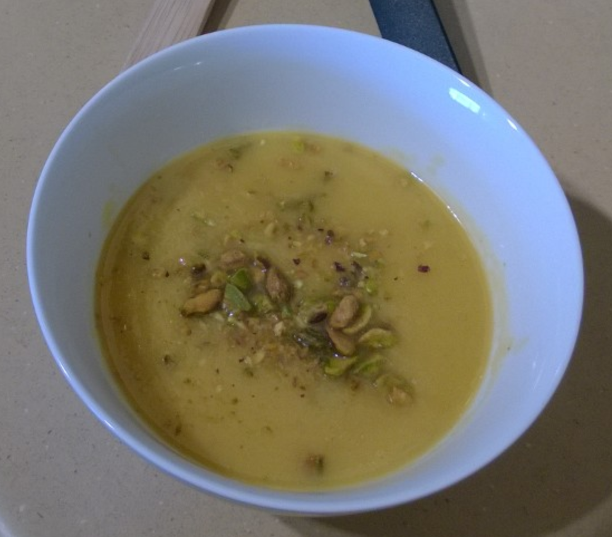

Butternut Squash Soup (V)

Ingredients
- 1-1½ lb butternut squash
- 1 large onion, chopped
- 1 shallot, chopped
- 1 large leek, chopped
- 4 C vegetable stock
- ¼ tsp salt
- ½ tsp pepper
Directions
- Sauté Base: Sweat leek, onion, and shallot in olive oil until soft.
- Add Squash: Add squash and sauté 3-4 minutes until tender.
- Simmer: Add chicken stock, season with salt and pepper, bring to a boil, then reduce heat, cover, and simmer 15-20 minutes.
- Purée: Blend until smooth; thin with water or stock if needed.
- Finish: Stir in cream or olive oil. Garnish with pistachios and chervil before serving.
The Gumbo Page
Michael Fritsche
mbf@fritsche.org